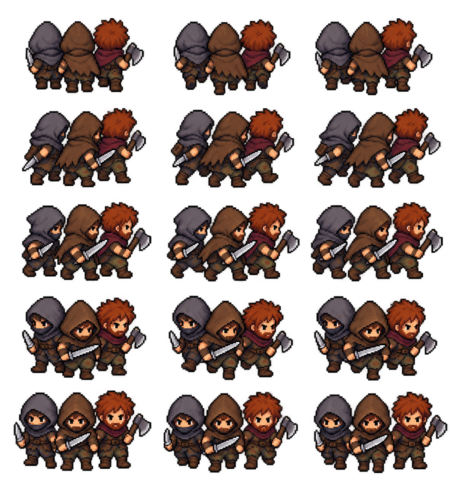
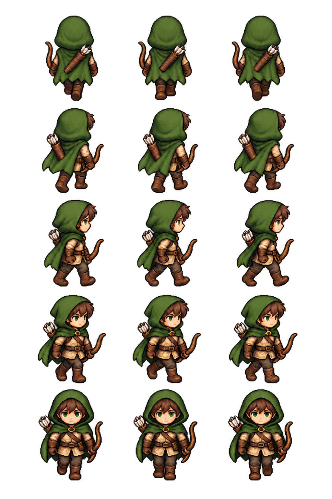

Présentation
Éclaireur et brigands sur la carte
Les groupes d’éclaireurs et de brigands disposent d’apparences distinctes.
Comprendre ce que cela implique
Les trois personnages des brigands forment une illustration, pas un décompte de soldats. Un groupe visible garde ses véritables effectifs, son propriétaire et sa mission dans l’état du serveur.
Un déserteur n’est pas automatiquement un brigand. Le choix du sprite respecte le type et l’identification du groupe, sans modifier les règles de détection ou les rencontres.


Dans cet article
Détails de référence
Texte de référence mis en forme et conservé dans l’historique de cet article. Les paragraphes datés peuvent décrire une évolution ou une étape antérieure.
L'éclaireur autonome est une seule silhouette : capuche et cape vertes, arc, carquois et équipement léger. Les armées de bandits sont représentées par trois brigands : deux personnages encapuchonnés et un combattant roux, avec des armes différentes. Ces trois personnages sont décoratifs et ne révèlent pas l'effectif réel.
Chaque planche comporte cinq orientations dessinées (N, NE, E, SE, S) et trois poses. Les vues SW, W et NW sont obtenues par miroir. La marche suit l'état officiel de déplacement ; les sprites restent droits sous l'inclinaison de la carte et leur orientation tient compte de sa rotation. L'ancrage des pieds est fixe.
Les sprites s'appliquent aux groupes visibles de type scout et aux groupes army ou rogue identifiés comme bandits par leur faction ou propriétaire. Les déserteurs ne sont pas assimilés aux brigands. La sélection ouvre les interactions existantes. Aucune règle de détection, de déplacement ou de combat n'est changée ; le serveur conserve son autorité.
Création des images
Mode utilisé : outil intégré imagegen, fond transparent. Les pixels générés sont conservés ; les rectangles des poses sont mesurés pour l'affichage.
Fichiers : app/assets/groups/scout-jrpg-walk-v1.png et app/assets/groups/brigands-jrpg-walk-v1.png. Aperçu : playtest/autonomous-group-sprites.html.
Prompt commun :
Transparent production sprite sheet, chunky 16-bit JRPG pixel art, chibi proportions, dark outlines. Exactly three columns and five rows. Columns: idle, left-foot walking, right-foot walking. Rows: north showing back, north-east showing back/right, east looking right, south-east showing front/right, south showing front. Same scale and anchor across poses. Western views mirrored in code. No labels, grid, scenery, background glow or ground shadows. Generous transparent gaps between complete poses.
Sujet éclaireur :
One medieval male scout, green hood and short green cloak, light tan leather equipment, bow and quiver. One silhouette only.
Sujet brigands :
A compact group of three medieval brigands: brown hood with short sword, grey hood with dagger, red-haired fighter with axe. Coherent formation, distinct silhouettes, same three characters in every pose.
Les corrections imagegen ont retiré le fond de l'éclaireur et précisé les orientations et les proportions JRPG des brigands.